Termas Marinas Park
Las Termas Marinas de San Clemente del Tuyú son un complejo de aguas termales ubicado en la ciudad de San Clemente del Tuyú, una localidad costera de la provincia de Buenos Aires, Argentina. Este complejo se encuentra a orillas del mar y ofrece una combinación única de termalismo y turismo costero. A continuación, te doy algunos detalles clave:
Aguas termales
Las aguas termales de San Clemente del Tuyú provienen de un acuífero subterráneo a más de 1.200 metros de profundidad, y se caracterizan por ser ricas en minerales, especialmente en sodio, calcio y magnesio, lo que las hace ideales para terapias de relajación, tratamientos de bienestar y recuperación de la salud.
Instalaciones: El complejo cuenta con diversas piletas de aguas termales, tanto cubiertas como al aire libre, lo que permite disfrutar del agua termal todo el año, incluso en invierno.
Las piscinas tienen diferentes temperaturas, para adaptarse a las preferencias de los visitantes y ofrecer diferentes beneficios terapéuticos.
También se ofrecen servicios de spa, como masajes, sauna, tratamientos de belleza, y áreas para la relajación.
Beneficios terapéuticos
Las aguas termales de San Clemente son conocidas por sus propiedades curativas, que pueden ayudar a aliviar diversas dolencias, como:
- Dolores musculares y articulares.
- Trastornos circulatorios.
- Problemas respiratorios.
- Estrés y tensiones.
- Problemas dermatológicos, como eccemas o psoriasis.
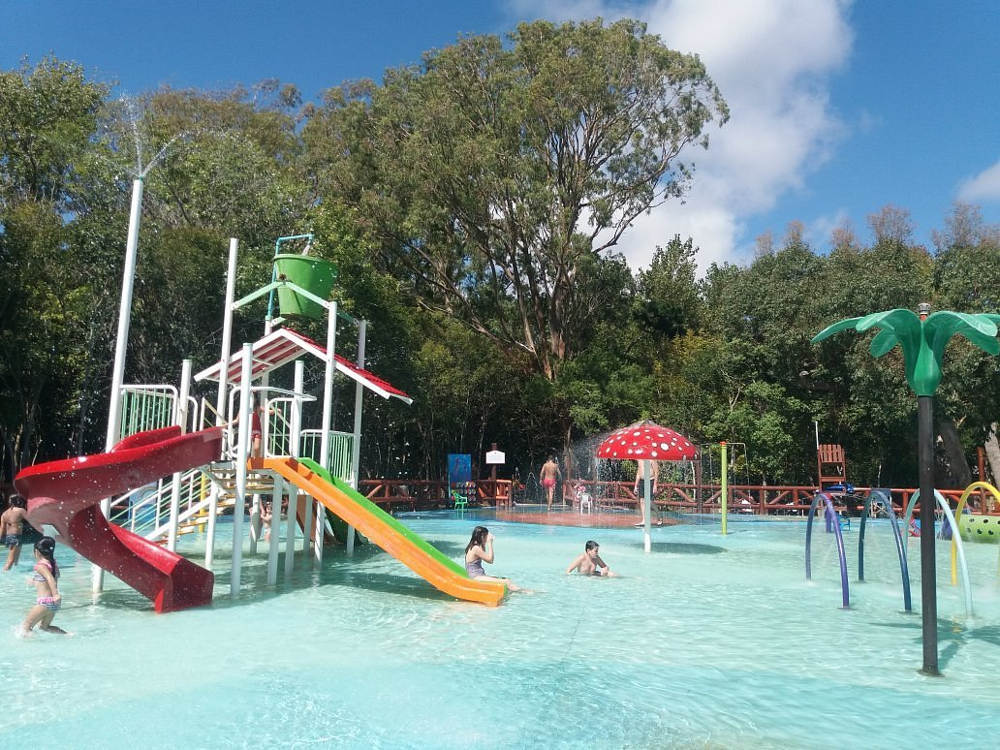
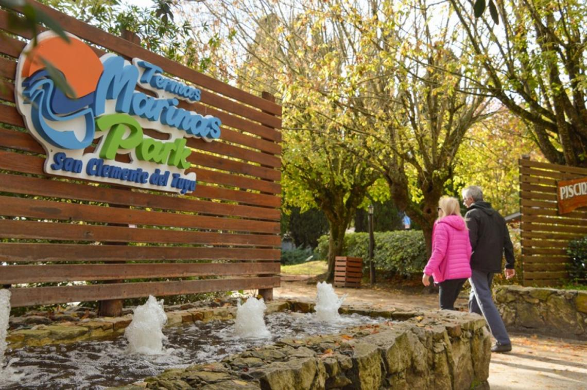
Visita la pagina oficial y saca tus entradas
Mundo Marino
Mundo Marino es uno de los principales atractivos turísticos de la región, especialmente para familias y aquellos interesados en el mundo marino y la conservación de la fauna.
Atractivos y Actividades Principales:
- Espectáculos con animales marinos: Mundo Marino es conocido por sus espectáculos con animales marinos, como delfines, lobos marinos, leones marinos y ballenas. Estos espectáculos permiten que los visitantes aprendan sobre el comportamiento de estos animales mientras disfrutan de una experiencia entretenida y educativa.
- Acuarios: El parque cuenta con diversos acuarios donde se pueden ver una amplia variedad de especies marinas, incluyendo peces tropicales, tiburones, rayas, y otras criaturas submarinas.
- Interacciones con animales: El parque ofrece la oportunidad de interactuar de manera segura con algunos de los animales marinos, como nadar con delfines en experiencias de contacto guiado, lo que es una de las actividades más populares.
- Recorridos educativos: Mundo Marino se centra en la educación sobre la fauna marina y la conservación de los océanos. Los visitantes pueden aprender sobre la vida marina, las amenazas a la biodiversidad y cómo contribuir a la protección del medio ambiente.
- Parques acuáticos: Además de los espectáculos, el parque cuenta con un área de parque acuático con juegos y atracciones para disfrutar durante el verano. Esto lo convierte en un destino completo para todas las edades.
- Zonas de descanso: En el parque hay varias zonas de descanso y restaurantes donde los visitantes pueden relajarse entre los espectáculos y actividades.
Mundo Marino también tiene un compromiso con la conservación de los animales marinos. En el parque se llevan a cabo programas educativos para concienciar sobre la importancia de proteger los ecosistemas marinos y se participa en iniciativas de rescate y rehabilitación de animales marinos en peligro.
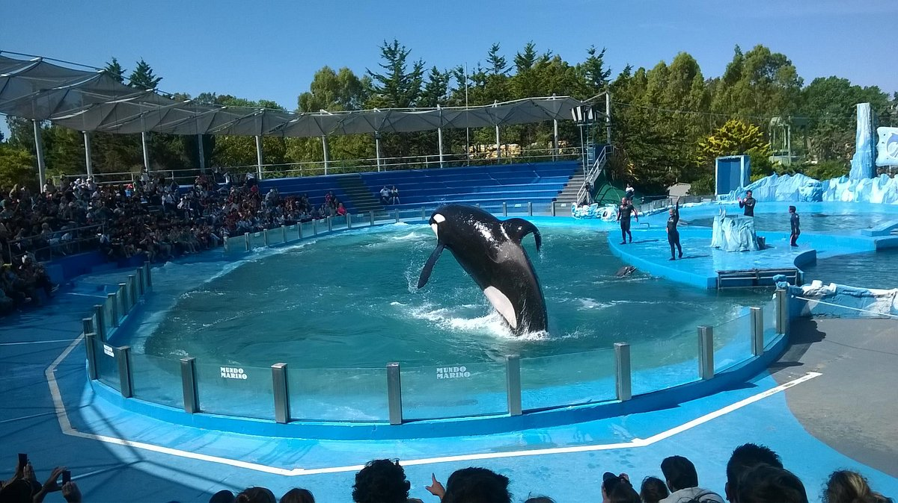
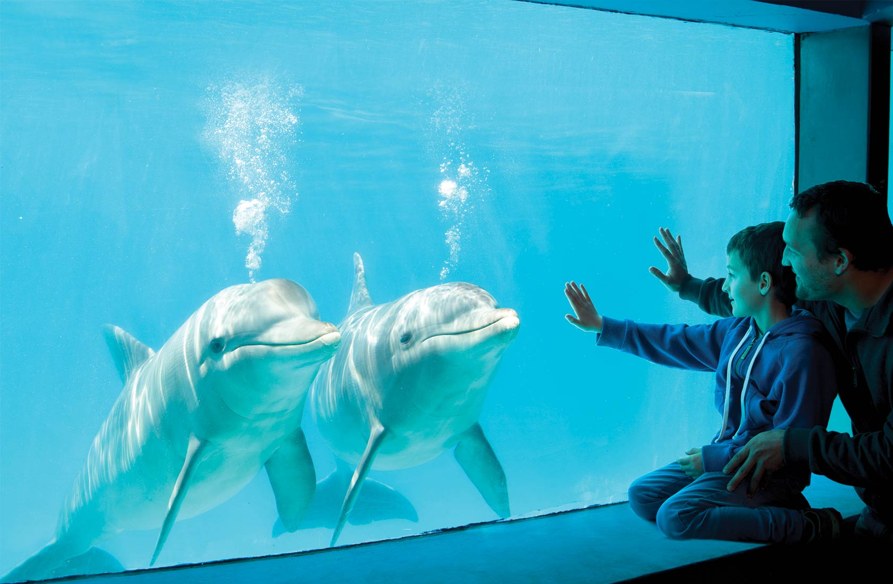
Compra tus entradas aca
Punta Rasa
Punta Rasa es un promontorio natural situado al sur de San Clemente del Tuyú, sobre el mar Argentino. Este sitio se encuentra en el extremo oriental de la Reserva Natural Otamendi, una zona de gran valor ecológico y paisajístico. Desde Punta Rasa, es posible observar el Río Salado en su desembocadura en el mar, creando una mezcla de paisajes de agua dulce y salada que resulta visualmente impresionante.
Atracciones y Actividades
- Avistaje de Aves: Punta Rasa es un destino importante para el avistaje de aves, especialmente para los amantes de la ornitología. La región forma parte de una ruta migratoria de aves y es hogar de muchas especies que se pueden observar a lo largo del año. El área es especialmente visitada por quienes disfrutan de la fotografía de aves y del contacto con la naturaleza.
- Pesca: Es un lugar popular entre los pescadores, especialmente aquellos interesados en la pesca deportiva. La desembocadura del Río Salado y las aguas cercanas de la costa ofrecen una rica diversidad de especies, lo que la convierte en una zona ideal para la pesca.
- Paisajes Naturales: Punta Rasa es un lugar perfecto para quienes buscan disfrutar de la naturaleza en su estado más puro. Desde su costa, se pueden apreciar hermosas vistas del mar Atlántico y las aguas del río. La tranquilidad y el aislamiento de la zona la hacen ideal para quienes buscan escapar del bullicio y disfrutar de la paz del entorno natural.
- Actividades al aire libre: Los turistas pueden disfrutar de caminatas, recorridos en bicicleta y paseos por la costa. La zona no está masificada por el turismo, lo que la convierte en un sitio ideal para quienes prefieren el contacto con la naturaleza de una manera más relajada.
Si estás buscando un lugar tranquilo y lleno de belleza natural para disfrutar de actividades al aire libre, el avistaje de aves o la pesca, Punta Rasa es un excelente destino en San Clemente del Tuyú.
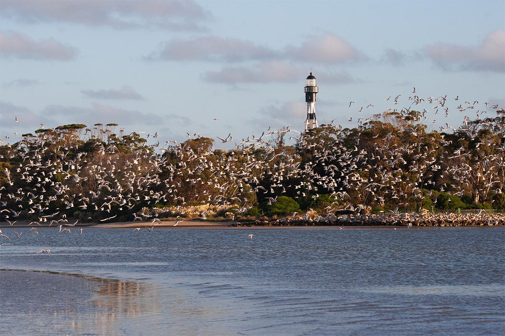
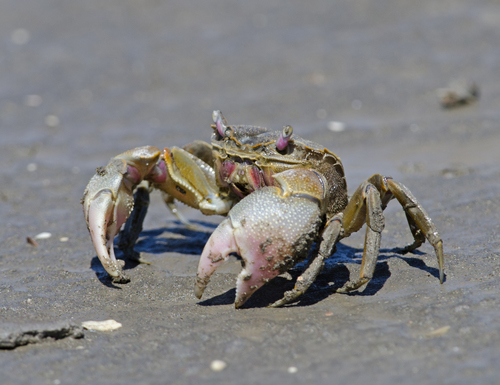
Tapera de Lopez
La Tapera de López es un sitio histórico de gran valor cultural ubicado en las cercanías de San Clemente del Tuyú, en la provincia de Buenos Aires, Argentina. Este lugar tiene una conexión importante con los primeros pobladores de la región y es considerado un patrimonio histórico que remonta a los tiempos de la colonización de la costa atlántica argentina.
La Tapera de López es una construcción que data de principios del siglo XIX, y está asociada a José López, un pionero y gaucho de la región que tuvo un rol destacado durante los primeros años de colonización y expansión hacia la costa atlántica.
El nombre "Tapera" hace referencia a una estructura rústica, construida con materiales locales como barro, paja y madera. En su época, las taperas eran viviendas simples utilizadas por los primeros pobladores y colonos, que vivían en condiciones de rusticidad mientras establecían sus asentamientos y se dedicaban a la ganadería y la agricultura.
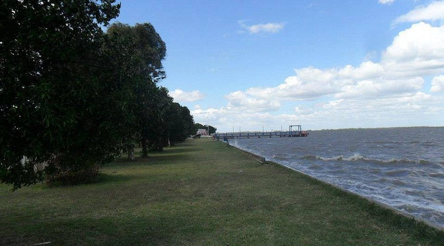
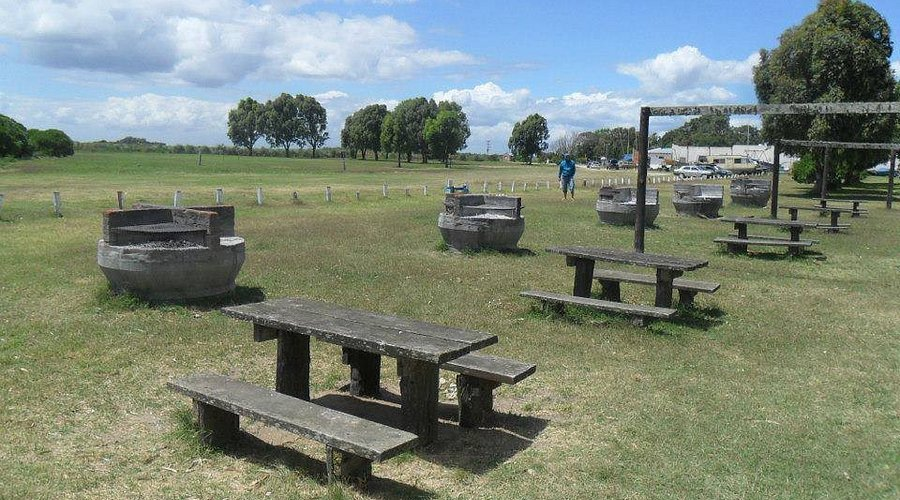
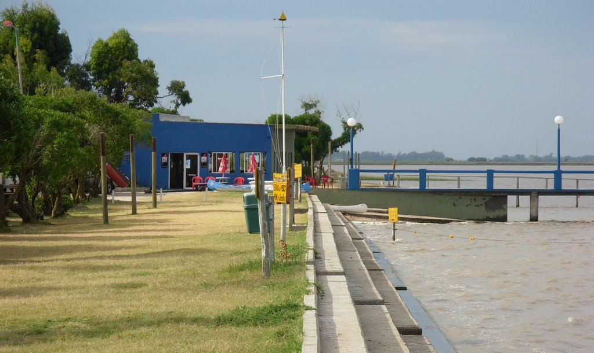
La Peatonal
La Peatonal de San Clemente del Tuyú es una de las principales zonas comerciales y turísticas de esta ciudad costera de la provincia de Buenos Aires, Argentina. Es un lugar muy concurrido, especialmente durante la temporada alta de verano, y constituye uno de los principales atractivos para quienes visitan la ciudad.
La peatonal se caracteriza por su amplia variedad de locales de comidas, zona de juegos para niños y toda la familia.
Tambien cuenta con los grandes artistas callejeros con sus espectaculos "a la gorra" alguno de ellos son:
- Nano Rey
- Mario Mey
- Transhumantes Circo
- Zona Gonzales

Nano Rey
Mario Mey
Transhumantes Circo
Zona Gonzales
El puerto
El Puerto de San Clemente del Tuyú es una pequeña instalación portuaria situada en esta ciudad costera, en la provincia de Buenos Aires, Argentina. Aunque no es uno de los puertos más grandes o comerciales del país, tiene importancia tanto para la pesca como para el turismo, y contribuye al desarrollo local.
Actividades en el Puerto
- Pesca Comercial y Deportiva: El puerto es conocido por ser un centro de actividad pesquera, tanto comercial como deportiva. La pesca es una de las principales actividades económicas de la región, y el puerto facilita la descarga y comercialización de productos pesqueros, como pescados y mariscos. Además, el puerto es utilizado por muchos pescadores deportivos para realizar salidas a mar abierto, aprovechando la proximidad de la costa atlántica.
- Turismo: Si bien el Puerto de San Clemente no es un puerto turístico masivo, recibe visitantes interesados en actividades relacionadas con el mar. En sus cercanías, se pueden encontrar paseos en bote, actividades de avistaje de fauna marina y excursiones de pesca. Además, la zona del puerto tiene un ambiente pintoresco, y muchos turistas disfrutan de paseos cerca del agua y la vista al mar.
- Lanchas y Embarcaciones Menores: En el puerto se pueden encontrar diversas embarcaciones menores, como lanchas y botes, que los pescadores utilizan para salir a las aguas del río y el mar. Estos barcos también son utilizados por turistas para disfrutar de paseos en el agua y explorar la región desde otra perspectiva.
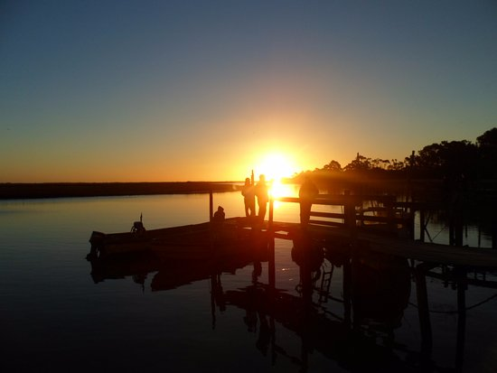
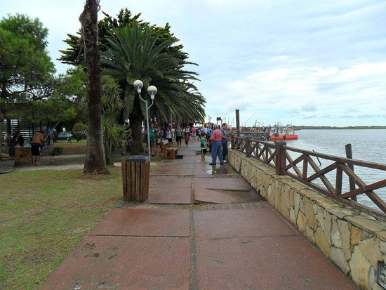
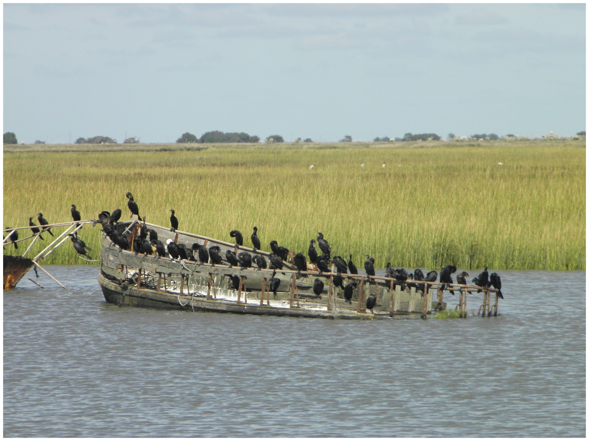